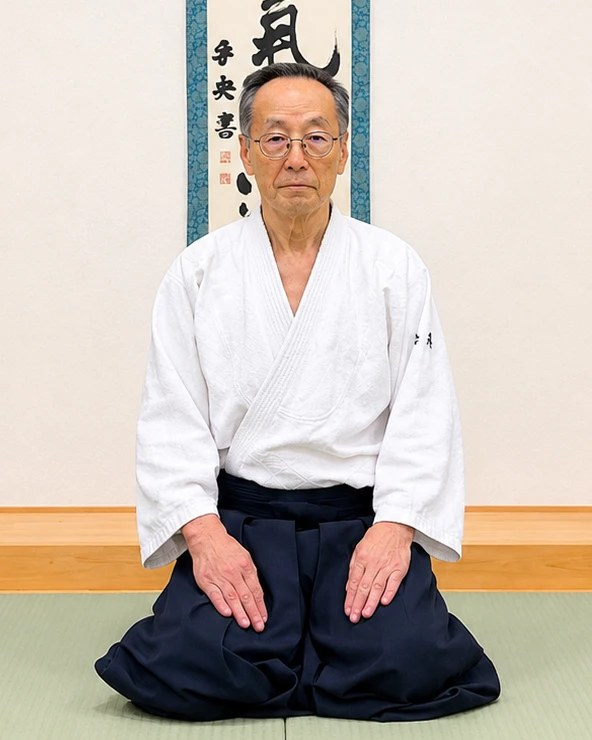

館長Chief Instructor
松井 慶康 まつい よしやすYoshiyasu Matsui
合気道五段位 杖道初段 弓道初段 居合道初段Aikido 5th Dan / Jodo, Kyudo and Iaido 1st Dan
昭和47年、広島大学で合気道をはじめました。
会社勤めのあいだ、稽古できなかった数年をのぞいて、50年近く続けています。
令和4年4月、多治見市に志鵬館を開きました。
岐阜県合気道連盟の理事、多治見市合気道協会の会長をつとめています。
初めての方には、原理原則からお教えします。合気道を好きになっていただき、共に合気の道を探求していきましょう。
Matsui Sensei began aikido in 1972 at Hiroshima University. Apart from a few years when work kept him away, he has trained for nearly 50 years. He opened Shihokan in Tajimi in April 2022. He serves as a director of the Gifu Prefecture Aikido Federation and as president of the Tajimi City Aikido Association.
"For beginners, I teach from the basic principles. I hope you come to love aikido, and that we can explore the way of aiki together."